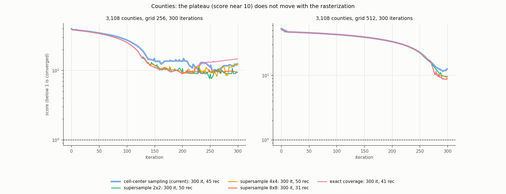
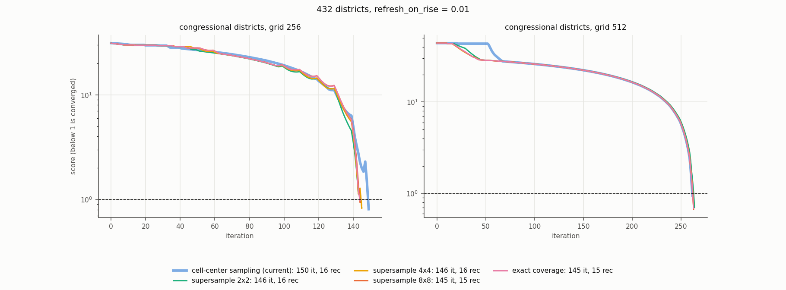
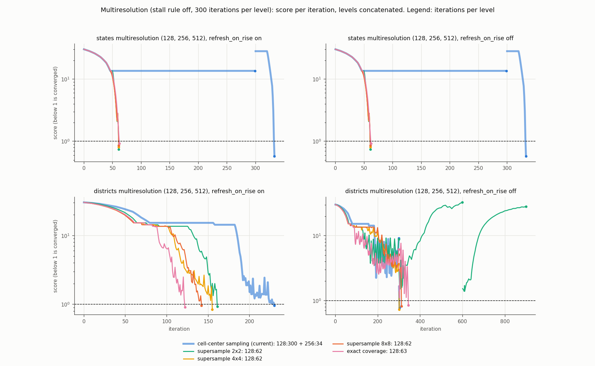
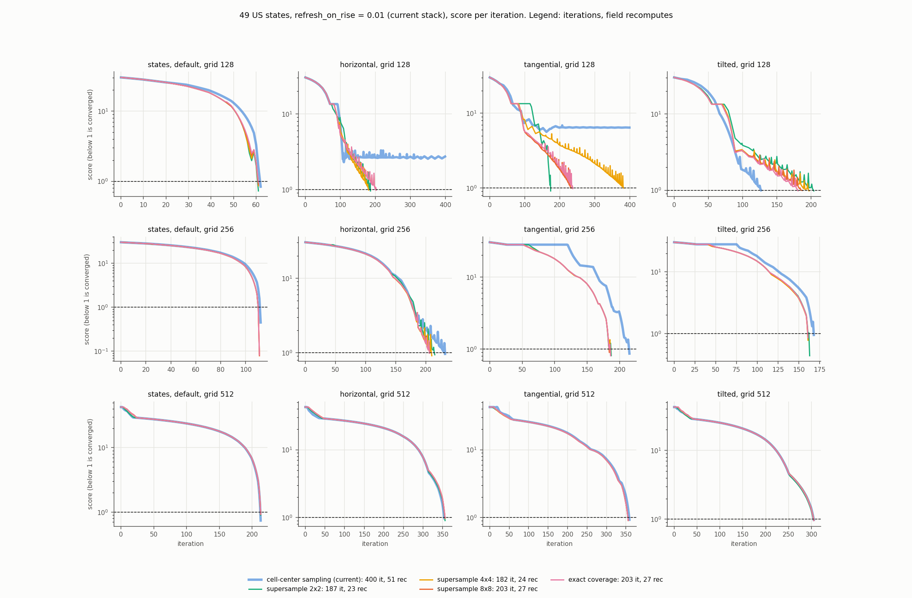
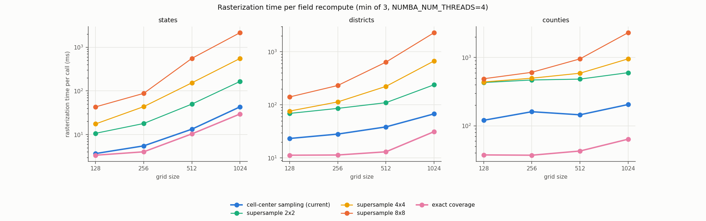
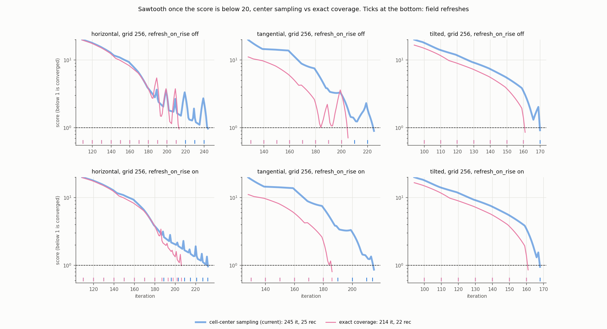

Does rasterizing the density by area coverage instead of cell-center sampling change flow cartogram accuracy, cost and stability, and how does it interact with stall detection and refresh-on-rise? It lets sub-cell regions participate (the multiresolution plateau and the grid-128 anisotropy failures disappear), the exact numba version costs no more than center sampling, but it leaves the sawtooth, the counties plateau and the border drift unchanged.
An investigation, not a change. The prototype is on investigate/area-coverage (from fix/stall-detection, local commit 3284c33). Unless a row says "off", results use refresh_on_rise=0.01 (the setting of 8441681); "off" is the setting of b0657b5. Full tables are in tables_all.md; scripts and per-run data are in scripts/ and data/.
MorphOptions.density_coverage (default None, the current cell-center sampling). An integer s >= 2 supersamples s x s points per cell; "exact" computes exact coverage with a numba kernel that integrates the polygon edges per cell (signed-area accumulation, the scanline font-rasterizer method). Each cell takes the coverage-weighted mean of the region densities plus the uncovered fraction times the mean density. The exact kernel matches shapely clipping to about 1e-13 on states, districts and counties.Convergence runs used the stall rule off, and the stall rule (patience 4) was replayed offline on each score history. Cost = iterations + recomputes x ratio, with the recompute-to-step ratio measured per variant. Accuracy is measured from the output geometries as |a_i/sum(a) / (t_i/sum(t)) - 1| ("ext"). "Rises" counts iterations where the score rises once it is below 20. Timing used NUMBA_NUM_THREADS=4 at machine load 15 to 20, so wall times are noisy and only ratios between variants mean anything.
| case | grid | center | s2 | s4 | s8 | exact |
|---|---|---|---|---|---|---|
| states | 128 | 4 | 11 | 17 | 43 | 3 |
| states | 256 | 5 | 18 | 43 | 88 | 4 |
| states | 512 | 13 | 50 | 153 | 555 | 10 |
| states | 1024 | 43 | 165 | 553 | 2155 | 30 |
| districts | 128 | 23 | 69 | 76 | 141 | 11 |
| districts | 256 | 28 | 86 | 114 | 232 | 11 |
| districts | 512 | 38 | 110 | 223 | 639 | 13 |
| districts | 1024 | 68 | 240 | 674 | 2301 | 31 |
| counties | 128 | 120 | 430 | 438 | 489 | 37 |
| counties | 256 | 161 | 469 | 498 | 607 | 37 |
| counties | 512 | 145 | 483 | 589 | 956 | 43 |
| counties | 1024 | 205 | 600 | 957 | 2315 | 64 |
Exact is 1.3 to 5 times faster than center sampling; supersampling is 3 times (s2) to 50 times (s8) slower. The recompute-to-step ratio on states at grid 256 is 10 for center, 8 for exact, 47 for s4 and 130 to 150 for s8; on counties at grid 256 it is 28 for center, 10 for exact and 75 for s4.
| case | raster | it | rec | cost | lib mean / max % | ext mean / max % | rises | spike |
|---|---|---|---|---|---|---|---|---|
| states | center | 113 | 12 | 236 | 0.32 / 4.4 | 0.31 / 4.4 | 0 | 0.99 |
| states | s2 | 111 | 12 | 393 | 0.78 / 9.7 | 0.78 / 9.7 | 0 | 0.99 |
| states | s4 | 112 | 12 | 699 | 0.21 / 0.8 | 0.21 / 0.8 | 0 | 0.99 |
| states | s8 | 112 | 12 | 1886 | 0.20 / 0.8 | 0.20 / 0.7 | 0 | 0.99 |
| states | exact | 112 | 12 | 220 | 0.20 / 0.8 | 0.20 / 0.8 | 0 | 0.99 |
| horizontal | center | 233 | 27 | 502 | 1.30 / 9.6 | 1.30 / 8.8 | 9 | 1.39 |
| horizontal | s4 | 211 | 24 | 1339 | 0.66 / 9.1 | 0.65 / 8.3 | 5 | 1.70 |
| horizontal | exact | 207 | 24 | 398 | 1.14 / 9.9 | 1.11 / 9.0 | 5 | 1.33 |
| tangential | center | 216 | 23 | 487 | 1.99 / 8.6 | 1.72 / 8.7 | 4 | 1.09 |
| tangential | s4 | 187 | 20 | 1322 | 1.95 / 8.3 | 1.96 / 7.7 | 3 | 1.16 |
| tangential | exact | 187 | 20 | 340 | 1.49 / 8.0 | 1.52 / 7.5 | 3 | 1.14 |
| tilted | center | 169 | 18 | 380 | 1.10 / 9.5 | 1.09 / 8.8 | 1 | 1.18 |
| tilted | s4 | 162 | 17 | 956 | 1.39 / 7.7 | 1.38 / 7.2 | 0 | 0.99 |
| tilted | exact | 162 | 17 | 327 | 1.21 / 8.5 | 1.19 / 7.8 | 0 | 0.99 |
| case | raster | status | it | cost | ext mean / max / share >10 % | rises |
|---|---|---|---|---|---|---|
| states | center | converged | 63 | 106 | 1.19 / 7.8 / 0 | 0 |
| states | exact | converged | 62 | 95 | 1.30 / 8.9 / 0 | 1 |
| horizontal | center | not converged (stall at 160) | 400 | 734 | 3.2 / 19.4 / 4.1 | 149 |
| horizontal | exact | converged | 203 | 348 | 1.28 / 8.9 / 0 | 16 |
| tangential | center | not converged (stall at 210) | 400 | 713 | 10.1 / 41 / 38.8 | 149 |
| tangential | exact | converged | 238 | 405 | 0.65 / 9.0 / 0 | 17 |
| tilted | center | converged | 128 | 243 | 0.68 / 9.1 / 0 | 6 |
| tilted | exact | converged | 182 | 317 | 2.49 / 8.8 / 0 | 40 |
Tilted at grid 128 is the one case where center is better (128 iterations against 182 for exact; s2, s4 and s8 take 188 to 205). At grid 512 every variant converges in identical iteration counts (214 states, 355 to 357 horizontal, 306 tilted). Districts converge in 145 to 150 iterations at grid 256 and 263 to 265 at 512 for every variant; cost at 256 / 512 is 405 / 871 for center, 253 / 634 for exact and 1029 / 3374 for s4.
| data | refresh | raster | level 128 | later levels | cost | ext mean / max % |
|---|---|---|---|---|---|---|
| states | on or off | center | 300 it, flat at 13.6 | 256: converged in 34 | 593 | 0.23 / 5.6 (DC) |
| states | on or off | s2 / s4 / s8 | converged in 62 | none | 161 / 249 / 393 | 1.2 / 7.2 to 7.9 |
| states | on or off | exact | converged in 63 | none | 124 | 1.6 / 9.2 |
| districts | on | center | converged in 231 | none | 768 | 0.15 / 8.7 |
| districts | on | s2 / s4 / s8 | converged in 162 / 156 / 143 | none | 916 / 1131 / 1466 | 0.6 to 2.2 / 8.4 to 9.2 |
| districts | on | exact | converged in 123 | none | 276 | 0.77 / 8.3 |
| districts | off | center | 300 it, best 2.2 | 256: converged in 3 | 770 | 1.0 / 7.2 |
| districts | off | s2 | 300 it, best 3.5 | 256 and 512: 300 each, never converges | 5271 | 0.8 / 14.0 |
| districts | off | s4 / s8 | 300 it, best 2.7 / 3.2 | 256: converged in 2 / 13 | 1504 / 2434 | 0.5 / 7.2, 0.7 / 8.1 |
| districts | off | exact | 300 it, best 2.6 | 256: converged in 45 | 601 | 0.46 / 8.4 |
With the stall rule on, the center level 128 stalls at 100 iterations on states and 240 on districts with refresh off.
Regions below one cell, and regions with no cell centre:
| data | grid | below one cell | no cell centre |
|---|---|---|---|
| states | 128 | 2 | 2 |
| states | 256 | 1 | 1 |
| states | 512 | 1 | 0 |
| districts | 128 | 203 | 150 |
| districts | 256 | 115 | 69 |
| districts | 512 | 33 | 28 |
| districts | 1024 | 6 | 5 |
| grid | raster | best score | rises | lib mean / max % | ext mean / max / share >10 % | cost |
|---|---|---|---|---|---|---|
| 256 | center | 9.9 | 40 | 4.5 / 156 | 58 / 2118 / 69 | 1560 |
| 256 | s2 / s4 / s8 | 7.6 / 8.2 / 9.1 | 52 / 76 / 82 | 3.2 / 2.5 / 3.7 | 49 / 46 / 52 (mean) | 3896 / 4028 / 3547 |
| 256 | exact | 9.2 | 110 | 3.2 / 139 | 51 / 8561 / 65 | 708 |
| 512 | center | 11.7 | 5 | 8.0 / 204 | 26 / 2812 / 43 | 1274 |
| 512 | s2 / s4 / s8 | 9.5 / 9.7 / 8.7 | 3 / 1 / 5 | 6.4 / 6.0 / 6.7 | 22 / 21 / 21 (mean) | 2762 / 3283 / 5291 |
| 512 | exact | 8.7 | 3 | 5.1 / 130 | 19 / 1310 / 35 | 707 |
| 1024 | center | 48.1 | 0 | 147 / 9667 | 397 / 22851 / 92 | 1451 |
| 1024 | exact | 48.1 | 0 | 148 / 9662 | 397 / 22815 / 92 | 888 |
The start z is +0.6. Results are identical with refresh-on-rise on or off, because the score never rises in these runs.
| grid | recompute_every | center | s4 | exact |
|---|---|---|---|---|
| 256 | 10 | +3.55 (496 vs 435) | +3.71 | +3.77 |
| 256 | 1 | +2.31 | +2.47 | +2.47 |
| 512 | 10 | +2.70 | +2.70 | +2.71 |
| 512 | 1 | +1.09 | +1.33 | +1.33 |
Each cell covers 56 runs: 7 case-grids (states at 128, 256 and 512, the three anisotropy runs at 256, districts at 256) x dt in {0.1, 0.2, 0.4, 0.6} x recompute_every in {10, 5}. No run diverged.
| raster | refresh_on_rise 0.01 (converged / not) | refresh_on_rise off (converged / not) |
|---|---|---|
| center | 53 / 3 | 49 / 7 |
| s4 | 54 / 2 | 49 / 7 |
| exact | 53 / 3 | 48 / 8 |
The runs that do not converge all hit the 400-iteration limit; most are dt 0.4 to 0.6 without refresh-on-rise, and four dt 0.1 runs at states grid 512 need more than 400 iterations with every variant.
1. **States and the anisotropy runs at 128, 256 and 512.** s4, s8 and exact are equivalent in accuracy and iterations; s2 is noisy (up to 9.7 % max error), no better than center. Coverage differs from center only where regions are sub-cell. At grid 128 center fails horizontal and tangential and every coverage variant converges; at grid 256 the DC error drops from 4.4 % to 0.8 % in the same 112 iterations; at grid 512 the results are identical. 2. **The multiresolution plateau is gone.** DC and the other sub-cell regions take part, so level 128 converges in 62 to 63 iterations (center sits flat at 13.6 for 300), matching the single grid-128 run. On districts, with refresh-on-rise on, level 128 converges in 123 iterations with exact against 231 with center (cost 276 against 768). Without refresh-on-rise, districts at 128 plateau (best 2.2 to 3.5) for every rasterizer: refresh-on-rise is what unblocks districts, not coverage. 3. **Districts and counties.** Districts at 256 and 512 are unchanged in iterations and cheaper with exact. The counties plateau barely moves (best 9.9 to 8.7 to 9.2 at grid 256, 11.7 to 8.7 at 512) and nothing converges. The worst regions have tiny targets: start areas of 1.5 to 14 cells and target areas of 0.003 to 0.05 cell (66 to 1165 votes). At grid 256, 2096 of 3108 targets are below one cell (856 at 512, 164 at 1024). These regions must shrink 100 to 500 times with a driving force proportional to their remaining area, so the rasterizer is not the limit. The large "ext" errors against the small library errors are #87. 4. **#86.** Coverage does not change the drift (z +3.55 for center, +3.77 for exact at grid 256), and the dependence on recompute_every is unchanged, which points to stale-field effects, not the rasterizer. 5. **Interaction with stall and refresh-on-rise.** Rises below score 20 at grid 256, refresh on / off: horizontal 9 / 17 (center) and 5 / 13 (exact); tangential 4 / 10 and 3 / 13; tilted 1 / 3 and 0 / 0. Spike sizes stay at 1.3 to 1.7. Coverage reduces iteration counts by 5 to 12 % on the anisotropy runs, but the sawtooth stays. At dt 0.4 to 0.6 refresh-on-rise is still needed (49 against 53 converged runs, the same for every raster). The replayed stall rule never fires on a run that converges; it fires only on counties and the grid-128 center anisotropy runs, and coverage removes the latter.
"exact" coverage as its own change.
Counties at grids 256 and 512.

Districts at grids 256 and 512.

Multiresolution level traces for states and districts.

Score per iteration for states and the three anisotropy runs; the legend iteration counts come from the horizontal grid-128 panel only.

Rasterization time per call by variant and grid.

The sawtooth with and without exact coverage, refresh-on-rise on and off.